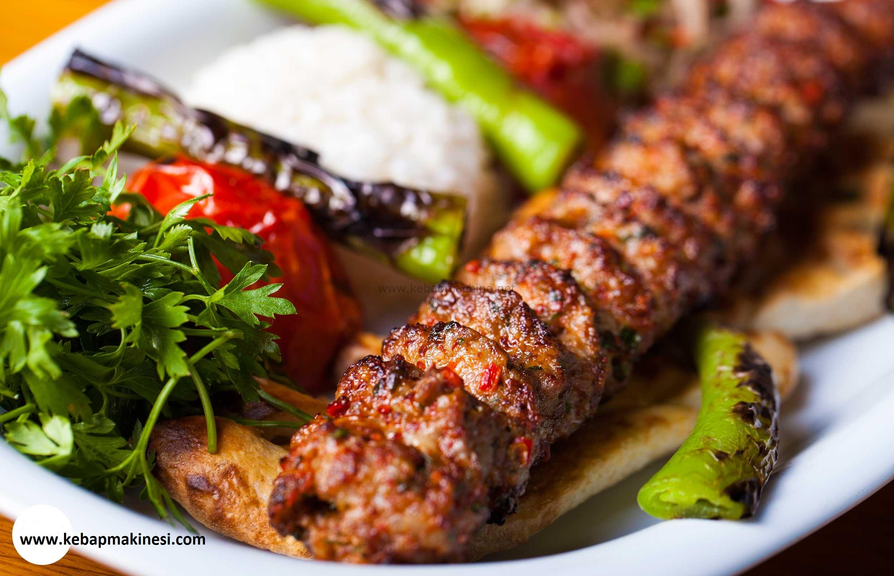

Adana Kebabi

Description
Adana kebabi is a traditional Turkish kebab dish named after the city of Adana in southern Turkey. It is made from high-quality ground lamb or a mixture of ground lamb and beef, mixed with various spices and herbs. The key to authentic Adana kebabi is the use of spicy red pepper flakes, which give the kebab its distinctive flavor and heat.
The meat mixture is seasoned with salt, pepper, and other spices such as cumin, sumac, and paprika. It is then kneaded and shaped onto long, flat metal skewers. The skewers are grilled over an open flame or charcoal, which gives the kebabs a smoky flavor and crispy exterior.
Adana kebabi is typically served with grilled vegetables, rice pilaf, and a side of salad. It is often enjoyed with lavash or pita bread and a yogurt-based sauce, such as cacik (tzatziki), to help balance the spiciness of the kebabs.
The dish is popular throughout Turkey and is a favorite at gatherings and celebrations. Its rich flavors and spicy kick make it a beloved choice for meat lovers and a must-try for anyone looking to experience authentic Turkish cuisine.
Ingredients
- 500g ground lamb or a mixture of lamb and beef
- 1 onion, finely chopped
- 2-3 cloves of garlic, minced
- 2 tablespoons of spicy red pepper flakes (adjust to taste)
- 1 tablespoon of ground cumin
- 1 tablespoon of ground sumac
- Salt and pepper to taste
- Skewers (metal skewers are preferred)
- Olive oil, for brushing
- parsley, chopped
Steps
- In a large bowl, combine 500g of ground lamb or a mixture of lamb and beef with finely chopped onion, minced garlic, spicy red pepper flakes, ground cumin, ground sumac, paprika, salt, and pepper. Mix well to combine all the ingredients evenly.
- Take a portion of the meat mixture and shape it onto long, flat metal skewers, pressing the meat firmly onto the skewers to form a long, sausage-like shape. Repeat with the remaining meat mixture.
- Preheat a grill to medium-high heat. Brush the grill grates with olive oil to prevent sticking.
Place the skewers on the grill and cook, turning occasionally, until the kebabs are cooked through and have nice grill marks, about 10-12 minutes.
- Remove the skewers from the grill and let them rest for a few minutes.
Serve the Adana kebabs hot with lavash or pita bread, yogurt, tomato sauce, rice pilaf, and grilled vegetables.
Garnish with chopped parsley before serving.